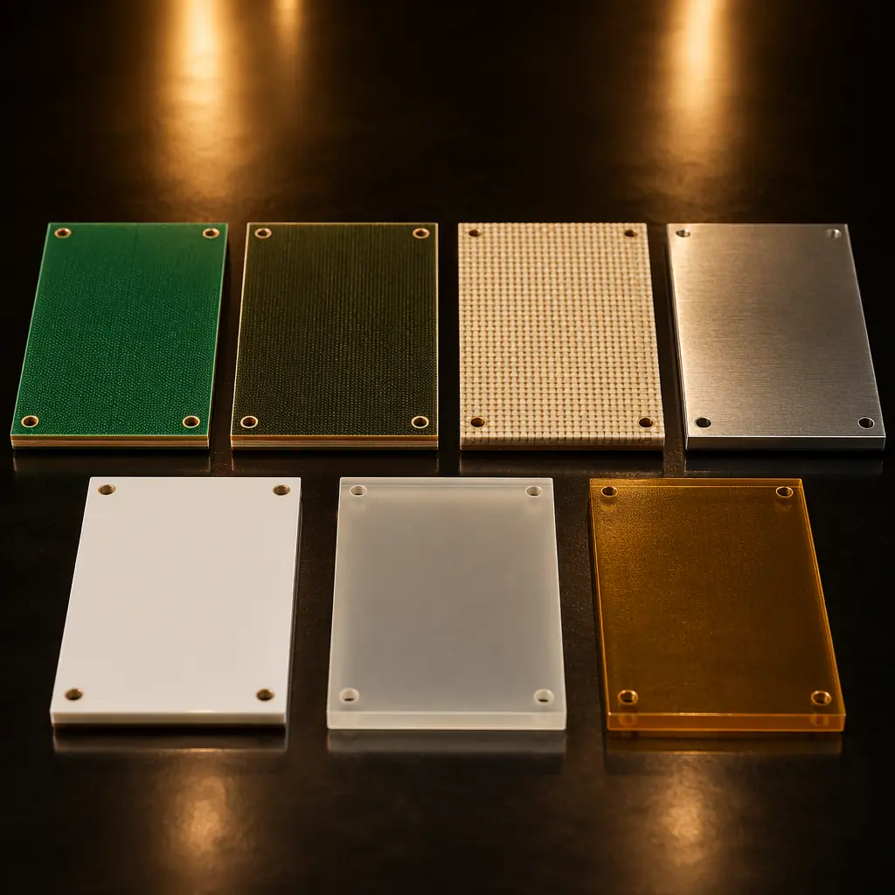
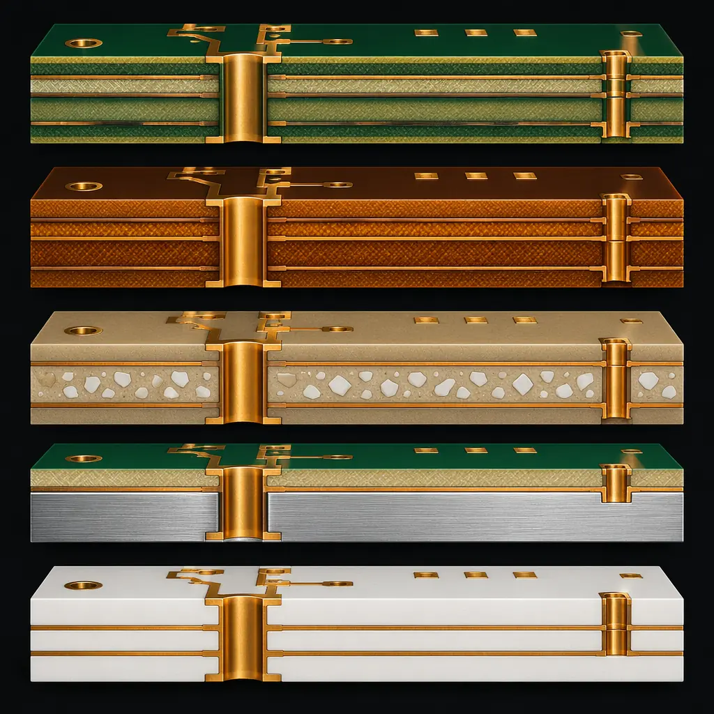
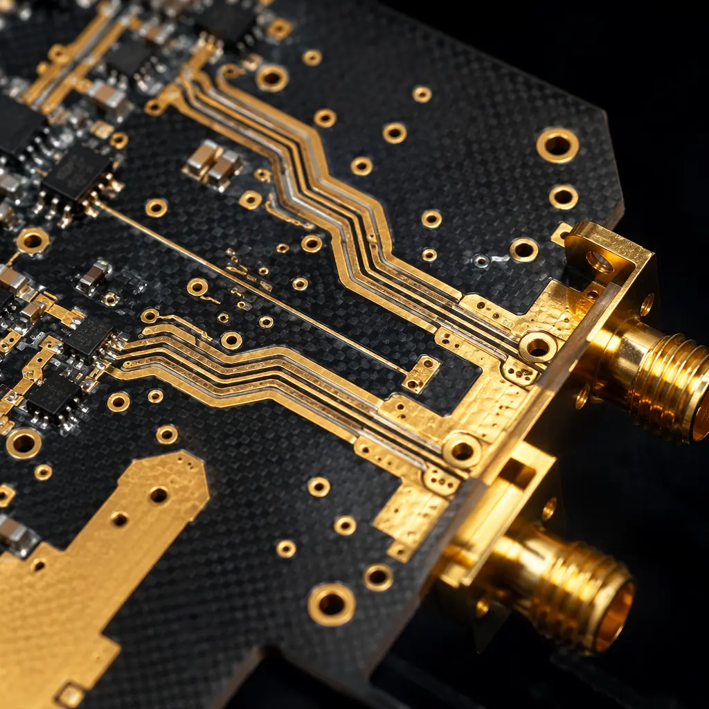
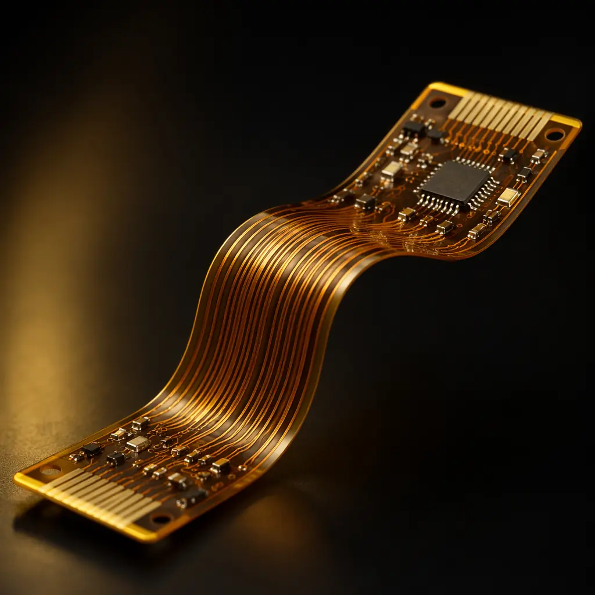
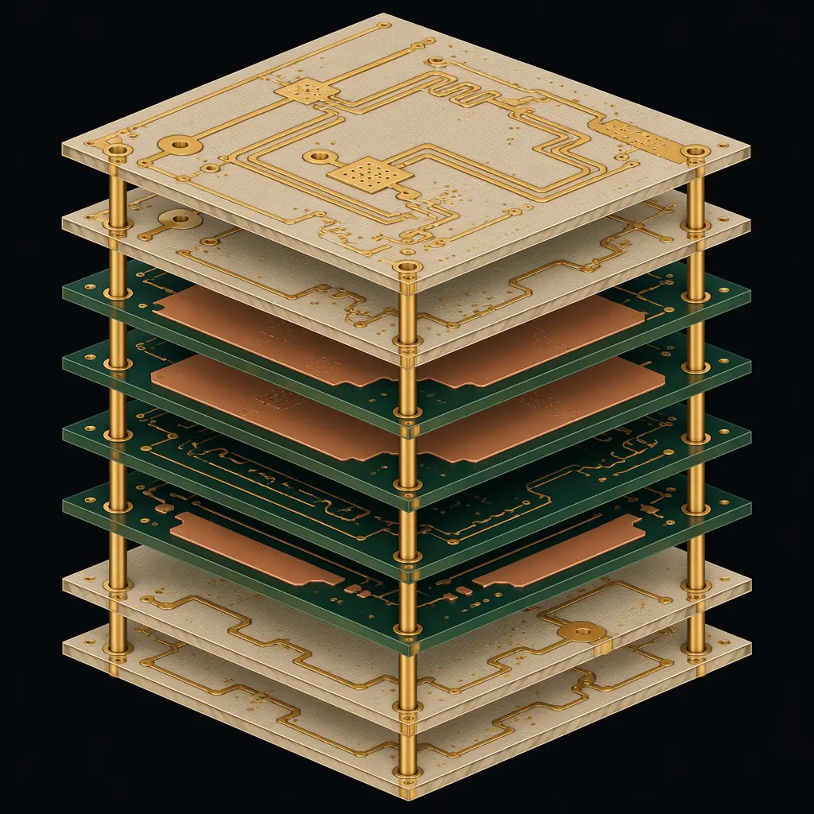

The PCB substrate is not just a mechanical carrier — it is the electrical foundation of every signal on your board. Dielectric constant (Dk), dissipation factor (Df), glass transition temperature (Tg), and thermal conductivity all change how your circuit performs at speed, at temperature, and over time. Yet many designs default to standard FR-4 without considering whether the application actually demands something else.
93| 94|At Huaxing PCBA, we process seven substrate families across 2–32 layer boards — from commodity FR-4 to ceramic and PTFE. This guide compares them with real numbers so you can make an informed choice, not a habitual one.
95| 96|
97| 98|Seven Materials at a Glance
99| 100|| Material | Tg (°C) | Dk @1GHz | Df @1GHz | Thermal Cond. | Relative Cost |
|---|---|---|---|---|---|
| FR-4 | 130–140 | 4.2–4.6 | 0.020 | 0.3 W/m·K | 1.0× (baseline) |
| High-Tg FR-4 | 170–180 | 3.8–4.3 | 0.015–0.018 | 0.4 W/m·K | 1.2× |
| Rogers 4350B | >280 | 3.48 ±0.05 | 0.0037 | 0.6 W/m·K | 4–8× |
| Aluminum Substrate | 130–150 | 4.0–4.5 | 0.020 | 1.0–3.0 W/m·K | 1.3–2.0× |
| Ceramic (Al₂O₃) | N/A (>1000) | 9.0–10.0 | 0.0004 | 20–30 W/m·K | 5–15× |
| PTFE (Teflon) | >250 | 2.1–2.6 | 0.0009 | 0.2 W/m·K | 5–10× |
| Polyimide | >250 | 3.4–3.8 | 0.005–0.008 | 0.3 W/m·K | 2–3× |

118| 119|FR-4: The Right Default (For Most Designs)
120| 121|Standard FR-4 — flame-retardant woven glass-reinforced epoxy laminate — is the industry workhorse for good reason. At 130–140°C Tg, it handles the thermal demands of most commercial and industrial electronics. With a Dk of 4.2–4.6 at 1 GHz, it's adequate for digital designs up to roughly 2–3 GHz before dielectric losses become significant.
122| 123|FR-4 works well when: your design operates below 2 GHz, ambient temperature stays under 100°C, and layer counts are moderate (2–8 layers). The material is universally available, well-characterized, and every PCB fabricator knows how to process it — which means competitive pricing and fast turns. At Huaxing, FR-4 boards represent approximately 65% of our production volume.
124| 125|Where FR-4 falls short: Above 140°C, the resin softens and the board undergoes rapid thermal expansion in the Z-axis (CTE >50 ppm/°C above Tg). This stresses plated through-holes and can cause barrel cracking after as few as 50 thermal cycles. If your board sees lead-free reflow (peak 260°C) and operates in a hot environment (engine compartment, industrial enclosure), standard FR-4's margin is thin.
126| 127|High-Tg FR-4: More Temperature Headroom, Same Ecosystem
128| 129|High-Tg FR-4 raises the glass transition temperature to 170–180°C by using a modified epoxy resin system with higher crosslink density. This gives you roughly 30–40°C more thermal headroom before the material enters its rubbery phase — enough to survive multiple lead-free reflow cycles and continuous operation at 120–130°C ambient.
130| 131|The Z-axis CTE improvement is the real advantage. Standard FR-4 expands at 50–70 ppm/°C above Tg; High-Tg grades bring that down to 35–45 ppm/°C. For boards with aspect ratios above 8:1 (board thickness to hole diameter), this is the difference between passing and failing 500-cycle thermal shock testing. Automotive under-hood ECUs and industrial motor drives routinely specify High-Tg for exactly this reason.
132| 133|At a cost premium of only about 20% over standard FR-4, High-Tg is the most cost-effective reliability upgrade available. If your design has any of these characteristics, High-Tg pays for itself: layer count ≥10, board thickness ≥2.0mm, operating ambient ≥85°C, or lead-free assembly with multiple reflow passes.
134| 135|Rogers: When Every Decibel Counts
136| 137|Rogers Corporation's hydrocarbon-ceramic laminates are the reference standard for RF and microwave PCBs. The key numbers: Dk of 3.48 ±0.05 at 10 GHz (Rogers 4350B) — an order of magnitude tighter tolerance than FR-4's ±0.2–0.3 — and Df of 0.0037, roughly one-fifth of FR-4's loss tangent.
138| 139|Why Dk tolerance matters: In a 50Ω microstrip at 5 GHz, a Dk shift of 0.2 changes the trace width requirement by approximately 8%. If your fabricator's FR-4 Dk varies from lot to lot (which it does — FR-4 isn't tightly specified for Dk), your impedance control goes out the window. Rogers materials solve this by controlling Dk to within ±1.5% lot-to-lot. At 28 GHz (5G mmWave), FR-4's dielectric loss alone can eat 3–4 dB of signal over a 100mm trace length — Rogers 4350B reduces that to under 0.7 dB.
140| 141|
142| 143|Hybrid stackups are the practical answer to Rogers' cost. You don't need Rogers on every layer — only the RF signal layers benefit from low-loss material. A common approach is a 4-layer board with Rogers on L1 (RF signals), FR-4 on L2–L3 (power/ground), and Rogers on L4 (RF signals). This captures 80% of the performance benefit at roughly half the cost of an all-Rogers board. Huaxing runs hybrid Rogers-FR-4 stackups daily and the process is fully mature.
144| 145|Aluminum Substrate: Thermal Management, Not Signal Integrity
146| 147|Aluminum PCBs solve a fundamentally different problem: heat. The construction is a copper circuit layer, a thin dielectric layer (typically 70–150μm of thermally conductive but electrically insulating epoxy or ceramic-filled polymer), and an aluminum base plate. Thermal conductivity ranges from 1.0 to 3.0 W/m·K — 3 to 10 times better than FR-4's 0.3 W/m·K.
148| 149|Aluminum's sweet spot is LED lighting and power electronics. A 50W LED module on FR-4 needs a heatsink and thermal vias to keep junction temperature below 85°C. The same module on a 2.0 W/m·K aluminum substrate can often operate without a heatsink — the aluminum base spreads heat across its entire surface area, reducing thermal resistance to ambient. The cost difference: aluminum PCB at $0.04/cm² vs FR-4 + heatsink + assembly labor at $0.07–0.10/cm². The aluminum board is often cheaper when total system cost is considered.
150| 151|Limitations: Aluminum PCBs are single-layer by nature (though 2-layer and even multilayer aluminum boards exist with more complex via structures). They're not suitable for high-speed digital or RF signals. And the dielectric layer's breakdown voltage (typically 2–4 kV) must be verified for mains-connected designs.
152| 153| 154|
155|
154|
155| Ceramic: Extreme Temperature, Extreme Performance
156| 157|Alumina (Al₂O₃) ceramic substrates operate where organic laminates literally cannot. Thermal conductivity of 20–30 W/m·K is two orders of magnitude above FR-4. Operating temperature range exceeds 350°C continuous. And the coefficient of thermal expansion (CTE: 6–8 ppm/°C) closely matches silicon die — eliminating the CTE mismatch stress that plagues chip-on-board assemblies on FR-4.
158| 159|Ceramic's applications are narrow but critical: RF power amplifiers (where heat and signal integrity both matter), LED chip-on-board (COB) packages, aerospace electronics, downhole drilling instruments, and medical implantable devices. The high Dk (9–10) is actually an advantage for miniaturization — a 2.4 GHz patch antenna on ceramic is roughly one-third the size of the same antenna on FR-4.
160| 161|The tradeoff is fabrication complexity and cost. Laser-drilled vias are required (mechanical drilling cracks ceramic), and the material is brittle — large panels (>150×150mm) require careful handling. At Huaxing, we run ceramic on a dedicated production line with laser via capability down to 0.075mm.
162| 163|PTFE: The Ultra-Low-Loss Specialist
164| 165|PTFE (polytetrafluoroethylene, best known as Teflon) composite laminates offer the lowest dielectric constant (Dk 2.1–2.6) and loss tangent (Df 0.0009) of any commercially available PCB substrate. At 77 GHz (automotive radar), PTFE-based materials can carry a signal 250mm with less than 1 dB of insertion loss — a distance that would consume 5–6 dB on FR-4, making the link marginal or non-functional.
166| 167|PTFE's processing challenges are real. The material is soft (it deforms under mechanical pressure), has poor adhesion to copper (requires sodium-naphthalene etch pretreatment), and creeps under load (plated through-holes need special attention). These factors add roughly 30–50% to fabrication cost on top of the material premium. But for applications above 20 GHz — satellite communications, automotive radar at 77 GHz, 5G mmWave — PTFE is not optional; it's the only material that meets the loss budget.
168| 169|Polyimide: Flexible, Tough, and High-Temperature
170| 171|Polyimide flex circuits bridge the gap between rigid boards and dynamic applications. With Tg above 250°C and Df of 0.005–0.008, polyimide outperforms FR-4 electrically and thermally while enabling 3D packaging — fold the circuit into the enclosure, eliminate connectors, reduce assembly steps. It's also the substrate for rigid-flex designs where rigid sections carry components and flex sections replace cables.
172| 173|When polyimide makes sense: wearable electronics, medical devices with tight packaging, aerospace where weight reduction matters (flex circuits weigh ~80% less than equivalent rigid boards + connectors), and any application requiring dynamic flexing (hinges, printer heads, robotic joints). The cost premium of 2–3× over FR-4 is often recovered through connector elimination and assembly labor savings.
174| 175|
176| 177|Decision Matrix
178| 179|Choose FR-4 if: digital design below 2 GHz, ambient below 85°C, ≤8 layers, standard reliability requirements, lowest cost priority.
181|Choose High-Tg FR-4 if: ≥10 layers, board thickness ≥2.0mm, lead-free assembly, ambient ≥85°C, automotive/industrial reliability needed, or multiple reflow passes.
182|Choose Rogers if: RF/microwave above 2 GHz, impedance tolerance <±5%, low insertion loss critical, 5G/mmWave applications. Consider hybrid stackup to control cost.
183|Choose Aluminum Substrate if: LED lighting, power converters, single-layer design, thermal management is the primary concern, heatsink elimination desired.
184|Choose Ceramic if: extreme temperature (>200°C ambient), chip-on-board with CTE-matched die, RF power with high heat flux, miniaturized antennas, aerospace/hermetic packaging.
185|Choose PTFE if: operating frequency above 20 GHz, automotive radar, satellite links, any application where Dk <3.0 and Df <0.002 are required.
186|Choose Polyimide if: flex or rigid-flex design, dynamic bending required, 3D packaging, weight-sensitive aerospace, connector elimination opportunity.
187|Hybrid Stackups: The Best of Both Worlds
190| 191|Most high-performance designs at Huaxing PCBA don't use a single material. A typical 5G antenna board might combine Rogers 4350B on layers 1–2 (RF signals), High-Tg FR-4 on layers 3–6 (digital/power), and Rogers again on layers 7–8 (RF signals). This hybrid approach controls cost by confining the expensive material to the layers that actually benefit from it. The cost scales linearly with the number of RF layers, not the total layer count.
192| 193|Our engineering team performs stackup simulations for every design, modeling impedance, crosstalk, and thermal behavior across the hybrid stack before fabrication. The result is a material specification that hits your performance targets at the lowest total cost — sometimes well below what a single-material approach would require.
194| 195|
196| 197|The Bottom Line
198| 199|Material selection is the single most consequential decision in PCB design — it determines your signal integrity budget, your thermal margin, and your fabrication cost in one stroke. The right choice depends on your frequency, your temperature, your layer count, and your reliability requirements. Standard FR-4 is the right answer for perhaps 60% of designs. The other 40% need something better.
200| 201|At Huaxing PCBA, every order includes a free material review as part of our DFM analysis. We'll tell you if your specified material is optimal for your application — and if it isn't, we'll recommend the alternative with the numbers to back it up. Send us your stackup and gerbers.
202| 203| 266|
267|
266|
267|